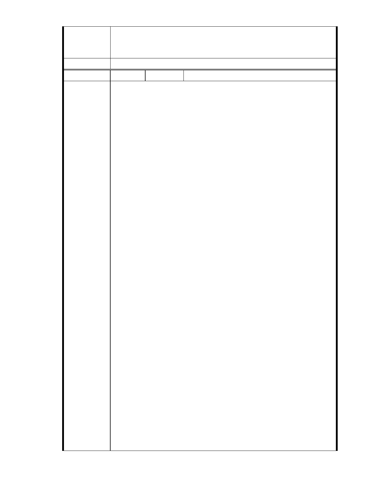

一、本案已進入都市計畫法定程序，後續將依都市計畫委員會審定內容
市府說明
為準。
二、相關陳情意見將納入本案審查人民意見，依法定程序辦理。
委 員 會 決 議 同編號 1。
編
號 83
陳情人 市長信箱（ MA201012070203 ）
慈濟內湖保護區開發案的『審˙慎˙思˙想』
雖此舉是慈濟欲開發──環保教育，照顧外配及社福中心，可是這關係
到政府的誠【信】，而政府威信－執信則需合【法】，這就是政府帶領人
民，執行向義的施政重點！讓我們來細細觀察【法】的定義，並遵循【法
理】，使開發案使先行通過法（程序）的調整，順應理的闡述（開發目的），
才能得人心民意，並順應環境的平衡啊！
法令是否合宜？都市計畫法的審視
第1條
為改善居民生活【環境】，並促進市、鎮、鄉街有計畫之均衡發展，特制
定本法。
其中大法官解釋字第 513 號
都市計畫法制定之目的，依其第一條規定，係為改善居民生活環境，並
促進市、鎮、鄉街有計畫之均衡發展。都市計畫一經公告確定，即發生
規範之效力。除法律別有規定外，各級政府所為土地之使用或徵收，自
應符合已確定之都市計畫，若為增進公共利益之需要，固得徵收都市計
畫區域內之土地，惟因其涉及對人民財產權之剝奪，應嚴守法定徵收土
地之要件、踐行其【程序】，並遵照都市計畫法之相關規定。
陳 情 理 由 27-2 條
重大投資開發案件，涉及都市計畫之擬定、變更，依法應辦理環境影響
評估、實施水土保持之處理與維護者，得採平行作業方式辦理。必要時，
並得聯合作業，由都市計畫主管機關召集聯席會議審決之。
前項重大投資開發案件之認定、聯席審議會議之組成及作業程序之辦
法，由內政部會商【中央環境保護】及【水土保持主管機關】定之。
而有與會人士提政治大學保護區變更的案例？為什麼？唉！這就是另外
一個嚴重的問題了，資訊如下
政治大學保護區？【李慶元:政大土地案，問題重重】
http://hanreporter.blogspot.com/2010/01/blog-post_30.html
象徵意義大於實質意義：懇請慈濟細細思想！
筆者認為此項【慈濟】保護區變更案，是象徵意義大於實質意義！慈濟
是環保優等生，可是慈濟卻在保護區內建設，這其實是一個矛盾啊！因
為是為政府劃入的【內湖保護區內】，而開發土地，而是關係到未來各項
【保護區】內，各種單位甚或公益團體，也可照此種方式開發，再一步
步擴建，而慈濟提出：不填土挖山。原本就是一塊平地，30 年來都是柏
油路，沒有溼地，已請工程單位鑽探，此處無斷層、礦坑，開發不挖山、
也不填土。未來預計作為環保教育、照顧外配及社福中心，邀請國際人
- 69 -